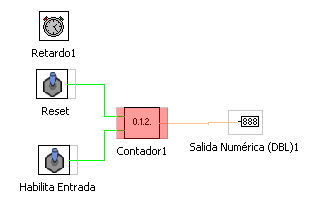
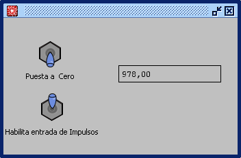

Función CONTADOR GENERADOR DE IMPULSO
Esta función genera desde 0 a 999 impulsos con una frecuencia de 10 impulsos/seg. Posee una entrada de puesta a cero y una de habilitacion de cuenta.
La función permite modificar el paso (velocidad de cuenta) asi como el número maximo a contar.
Con el bloque retardo se consigue modificar el patrón de tiempo del paso del contador.
